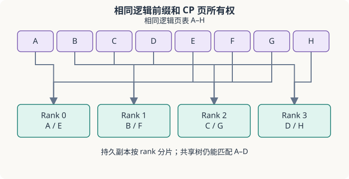
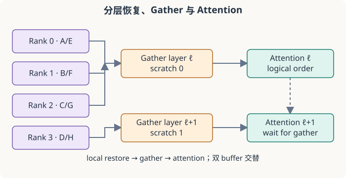

第 33 章 · SGLang 高级机制
KV Cache Sharing：前缀复用与 CP 页分片
相同 prefix 如何跨请求复用？CP ranks 如何只保存每页的一份持久副本？
请求 A 与 B 共用系统 prompt：RadixCache 复用已计算的公共前缀。两台 worker 希望复用相同前缀：需要 cache-aware routing 或支持跨实例共享的存储。官方名为 KV Cache Sharing 的特性则是 Prefill CP 组中分片持久 KV，减少 rank 间重复副本。三者可以组合，但不是同一个机制。
1. 同一个词，三个不同共享域
请求 A 与 B 共用系统 prompt：RadixCache 复用已计算的公共前缀。两台 worker 希望复用相同前缀：需要 cache-aware routing 或支持跨实例共享的存储。官方名为 KV Cache Sharing 的特性则是 Prefill CP 组中分片持久 KV，减少 rank 间重复副本。三者可以组合，但不是同一个机制。
2. 跨请求：相同 token 前缀只是必要条件
A=[11,12,13,91]、B=[11,12,13,73]，最长公共前缀是 3；页大小为 2 时，完整页教学模型可复用 2 个 token。还必须检查模型/权重版本、适配器、位置和缓存命名空间；不能因为字符串一样就把任意两个租户的缓存接起来。引用计数、写入完成与淘汰决定实际生命周期。
3. CP 分片：共享逻辑树，不共享物理地址
CP4 ranks 保存相同逻辑 radix tree。A–H 八页分别由 rank0 持 A/E，rank1 持 B/F，rank2 持 C/G，rank3 持 D/H。A–D 命中时所有 rank 得到同一逻辑 prefix，而各 rank 只持其中一页。

4. 页归属与本地地址
令逻辑 slot 为 x，页大小 P，shard group size C。owner=floor((x mod (C×P))/P)，local=floor(x/(C×P))×P+(x mod P)。P=2、C=4、x=13 时，owner=2、local=3；这是 PageInterleavePlacement 的算术规则，不是 token ID 或网络地址。
5. 每层 Gather：省存储不等于没有通信
attention 读取前先 all-gather 所需页到当前层 scratch，通过页表恢复逻辑顺序。两个交替 buffer 可将下一层 gather 与当前计算重叠，但 scratch 也消耗预算。若八页每页 1 MiB，四 rank 全复制持久总量 32 MiB，分片后 8 MiB；不包括 gather 临时 buffer，真实容量收益会更小。

6. HiCache、MTP 与 PD 的组合边界
Host backup/restore 保留各 rank 所有权；先 restore local pages 再 gather 再 attention。GLM MTP target/draft 的 KV 与 indexer 状态沿相同计划。PD 传输时各 Prefill rank 发送自己持有的页，Decode 接收完整未分片条目。L3 跨实例复用还取决于 storage backend 和 namespace。
7. 配置与代价：什么工作负载适合
官方示例在 Prefill 使用 --enable-kv-cache-sharding，并非所有 decode worker 开启。结合 CP strategy、backend、page size、HiCache layout 和 PD transport 验证具体支持组合。长 prefix、多轮 reuse 可省持久容量；短请求或互联带宽不足时 gather 可能抵消收益。对照测量独立 tokens、prefix hit、scratch、gather bytes、TTFT 与吞吐。
8. 交互：改变机制状态
跨请求与 CP 共享状态选择
跨请求前缀：A/B 最长公共前缀 3；P=2 的教学规则只提交 1 个完整页。
CP4 分片：8 页原本四份共 32 页，分片持久共 8 页，每 rank 2 页；attention 前还需 gather。
命名空间不符：即使 token IDs 完全一致，也拒绝共享；改权重版本或 adapter 后必须重新验证缓存身份。
上述均为教学数值；不代表 GPU benchmark。
9. 可执行 CPU 实验
下载 kv_sharing_pages.py，使用 Python 标准库执行。实验验证离散状态与边界，不调用真实 SGLang engine 或 GPU kernel。
python3 examples/kv_sharing_pages.py测试包含正常输入和不变量检查，具体断言见源文件。
10. 源码阅读路线与适用边界
固定上游实现快照 75ed36d976113c693f8e6f64925e119573a93fda。以下是源码与官方文档入口；教学公式是显式假设下的推导。
- Shared logical tree, distributed pages：KV cache sharing shards persistent pages among prefill ranks, with shared logical radix tree and request-to-token mapping.
- PageInterleavePlacement.owner_of / local_index：Owner and local row are arithmetic functions of logical slot, shard size and page size.
- Gather one layer at a time / HiCache and MTP integration：Per-layer all-gather restores logical order in alternating temporary buffers; HiCache preserves ownership and PD sends owned pages.
- _prefetch_layer / _acquire_slot_for_read：Layer prefetch and scratch-slot acquisition are separated.
- Tier Sharing Scope：Cross-instance sharing depends on L3 backend; local tiers are not automatically a cluster-wide shared pool.